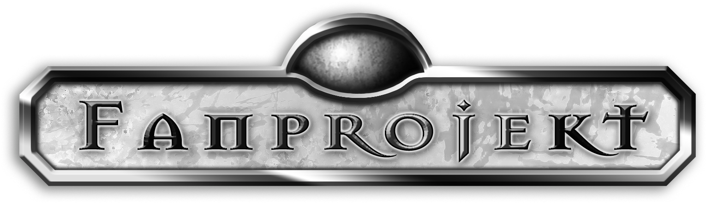

Hilf mit, Avesmaps zu erweitern. Wir tragen gern neue Orte aus der DSA-Welt ein. Alle Meldungen werden gesammelt und bei Gelegenheit geprüft sowie eingepflegt. Bitte melde nur Orte mit sicherer Quellenlage. Hinterlass eine Beschreibung der Stelle, wenn nicht ganz klar ist, wo genau sich der Ort befindet.

Nicht-kommerzielles FanprojektFanprojekt. Avesmaps ist ein offenes, nicht-kommerzielles Fanprojekt von Valentin Schwind. Diese Website enthält nicht-offizielle Informationen zu Das Schwarze Auge und Aventurien und kann offiziellen Publikationen widersprechen.
Verantwortlicher. Entwicklung, Gestaltung, Programmierung und Betreibung durch: Valentin Schwind (vali.de)
Kartenmaterial. Die Karte basiert auf bearbeitetem offiziellem DSA-Kartenmaterial. Veröffentlichung und Bearbeitung erfolgen nach bestem Wissen im Rahmen der von Ulisses für nicht-kommerzielle Online-Nutzung bereitgestellten Lizenzbedingungen.
Fanrichtlinien. Kennzeichnung als Fanprojekt und Verwendung des DSA-FANPROJEKT-Logos orientieren sich an den von Ulisses am 29.07.2011 veröffentlichten und 2019 inhaltlich überarbeiteten Fanrichtlinien. DSA-bezogenes Karten-, Bild- und Datenmaterial wird hier nicht unter Creative-Commons- oder vergleichbaren Fremdlizenzen veröffentlicht. Die Erlaubnis zur Verwendung von Bildmaterial erfolgt laut Ulisses nur bis auf Widerruf.
Orts- und Wegdaten. Orts-, Kreuzungs- und Wegdaten wurden aus avespfade.de teilweise abgeleitet und ergänzt. Quelle laut avespfade: Oliver Hackstein und Florian Mazur. Nach Angabe von avespfade wurden einzelne Ortspositionen teils an das Dereglobus-Projekt angelehnt.
Disclaimer. Artwork © Ulisses Spiele. DAS SCHWARZE AUGE, AVENTURIEN, DERE, MYRANOR, THARUN, UTHURIA, RIESLAND und THE DARK EYE sind eingetragene Marken der Ulisses Spiele GmbH, Waldems. Die Verwendung der Grafiken erfolgt unter den von Ulisses Spiele erlaubten Richtlinien. Eine Verwendung über diese Richtlinien hinaus darf nur nach vorheriger schriftlicher Genehmigung der Ulisses Medien und Spiel Distribution GmbH erfolgen.
Markenhinweis. DAS SCHWARZE AUGE, AVENTURIEN, DERE, MYRANOR, THARUN, UTHURIA und RIESLAND sind Marken der Significant Fantasy Medienrechte GbR. Avesmaps steht in keiner offiziellen Verbindung zu Ulisses Spiele.
Quellen. avespfade.de · Orkenspalter Kartenmaterial · Ulisses Fan-Richtlinie · GitHub-Repository
Hinweis: Diese Zusammenfassung dient der Quellen- und Lizenzangabe im Projekt.